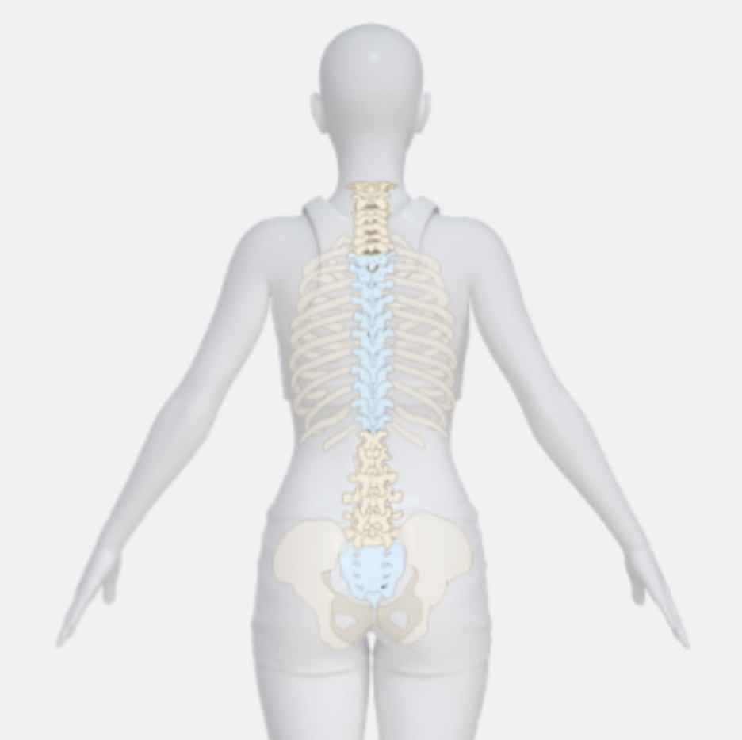
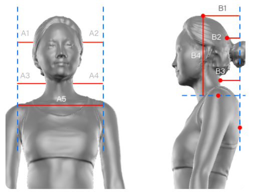
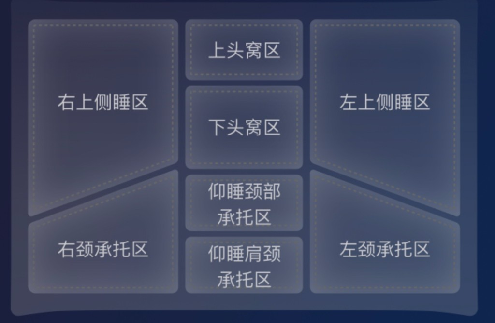
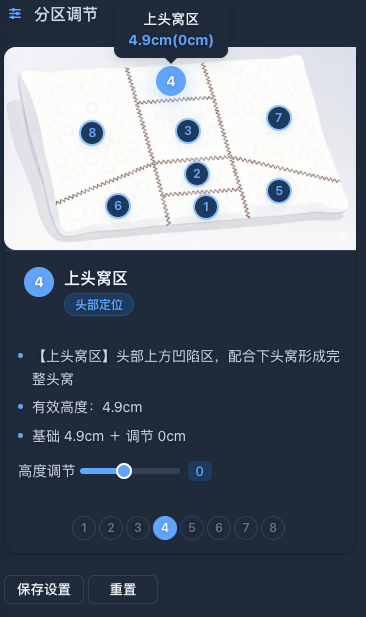
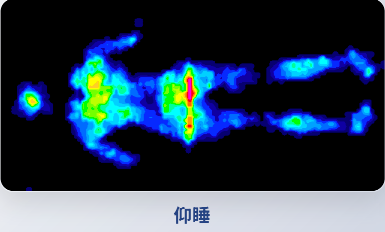
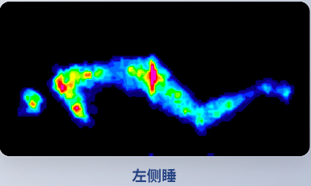
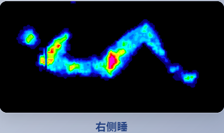
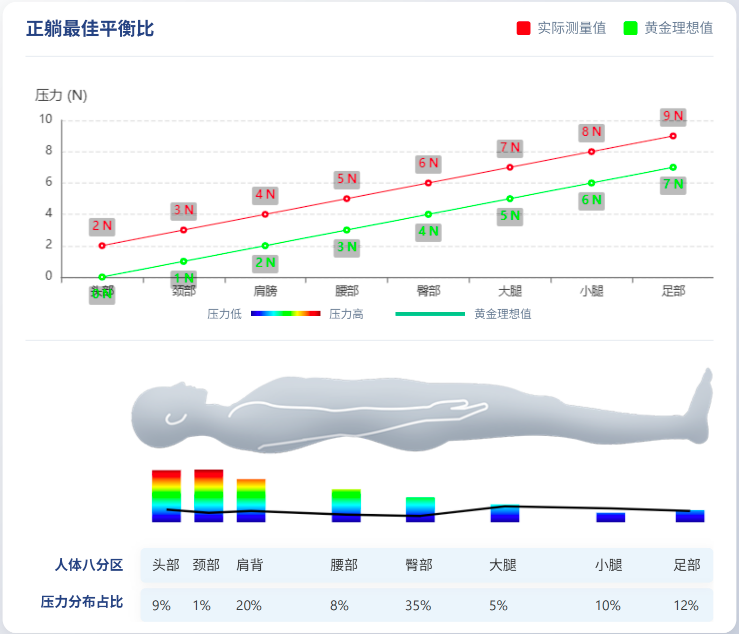
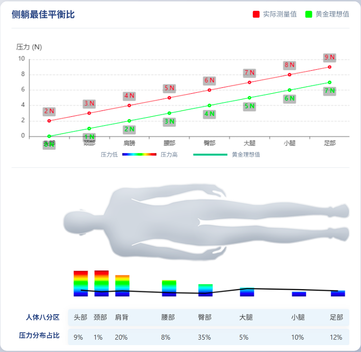

| 区域 | 基础高度 | 调节量 | 调节后高度 | 填充克重 |
|---|---|---|---|---|
| Z1 仰睡肩颈承托区 | 8.2cm | 0cm | 8.2cm | 0g |
| Z2 仰睡颈部承托区 | 7.7cm | 0cm | 7.7cm | 0g |
| Z3 下头窝区 | 4.3cm | 0.5cm | 4.8cm | 8g |
| Z4 上头窝区 | 4.9cm | 0cm | 4.9cm | 0g |
| Z5 左颈承托区 | 10.4cm | 0cm | 10.4cm | 0g |
| Z6 右颈承托区 | 10.4cm | 0cm | 10.4cm | 0g |
| Z7 左上侧睡区 | 8.5cm | 0cm | 8.5cm | 0g |
| Z8 右上侧睡区 | 8.5cm | 0cm | 8.5cm | 0g |




